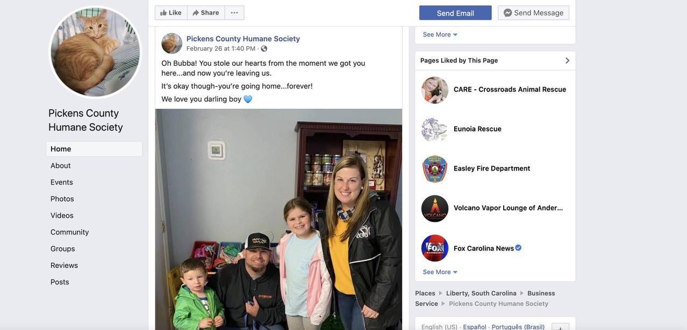
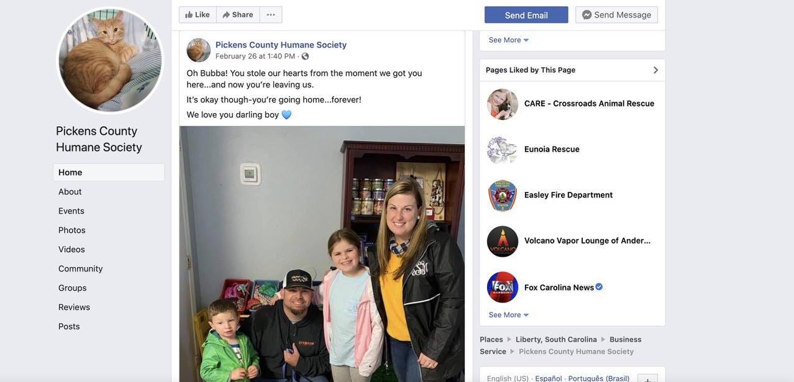

Research
This portion incnludes my primary research on my client, Pickens Humane Society, and secondary research on other non profit animal shelters.
Primary Client Research
Research from the Pickens County Humane Society website
The Pickens County Humane Society in 1972 opened as a 501(c)3 nonprofit, which is just a technical name for a charitable organization that doesn’t take any earnings for private shareholders or individual. They provide refuge for stray and unwanted pets, while also having a goal to eliminate suffering and overpopulation through education. Their goal isn’t to just help unwanted pets find good homes, but they want to insure that there will be less animals on the streets and overpopulated in the area from not getting spayed or neutered. Their adoption fees are $85 for all animals. This includes their de-worming, vaccinations, spay/neuter, feline leukemia test (cats), heart worm test (dogs); also, if supplies are available, it includes these as well: collar, harness, leash, toys, carrier (for cats) and a small bag of food. This website provides a lot of information about their services, who they are, how to get involved, and how to donate.

About Us
PCHS's mission is to “provide a refuge for stray and unwanted pets, to eliminate animal suffering and overpopulation through public education and to find the most suitable, forever home for each pet.” They want to help groe and provide resources for their community. On their About Us page, they also included some facts about their place including:
- PCHS became a NO-Kill facility in 2014
- PCHS takes in 700-1,000 pets per year
- PCHS receives more "owner surrender" animals vs. "stray" animals
- PCHS is a NON-County operated facility and thrives only on donations
- PCHS animals are accepted with the goal to restore health, socialize, and find the most suitable adoptive home
Events
Most of the events they host look local and team up with a business, like a golf tournament fundraiser and a Pancake Breakfast Pick-up @ The Grill on Valentine’s day. They also host an adopt-a-thon at tri-county tech and a yard sale/bake sale at their own building. These events raise money in order for them to provide services and stay running.
Media
They are not too active on social media, besides their Facebook account. This isn’t that bad considering their a non-profit organization and not a business. However, with them lacking resources and money, it might be a good idea to broaden their accounts on other social media platforms in order to bring in more volunteers, more donations, and more customer/adopters. Their Facebook could use some tweaking and redesigning. Their posts look great; they post pretty regularly and they’re very friendly. However, their profile picture and cover photo are pets, not an official logo of their organization. The Facebook is lacking some professionalsim. These are some statistics of their Facebook page:
- 10,573 people have liked the page
- 10,939 people follow the page
- 275 check-ins
- Rated 4.7 out of 5, based on 146 reviews
 

Summary
From this primary client research, I was able to learn the history and mission behind Pickens County Humane Society, which is an important aspect of Human Centered Design. I also learned about the work they put in through their Facebook and in the events they host locally. Seeing how hard they work to keep their facility open, inspires me to work as hard as I can to redesign their website in the most effective way for them.